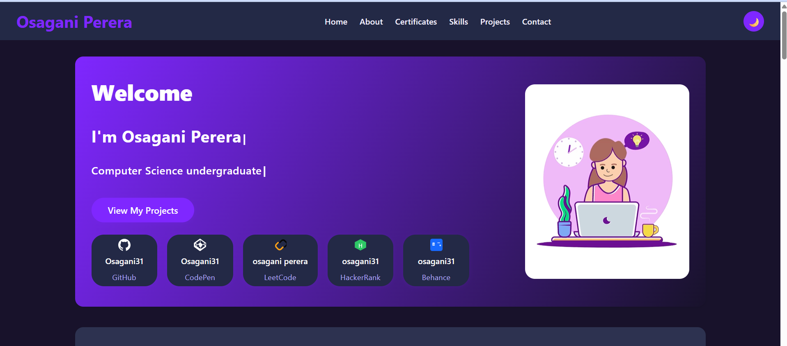

Responsive Portfolio with Dark/Light Mode
A sleek and modern personal portfolio website created using **HTML, CSS, JavaScript, and Bootstrap**. It includes a light/dark mode switch, smooth animations, and a responsive layout. The design highlights projects, skills, and contact information in a clean, professional style.
Features:
- Light & Dark mode toggle
- Animations and transitions
- Responsive layout using Bootstrap
- Project showcase and resume link
- Smooth navigation and clean UI
Tech Stack: HTML, CSS, JavaScript, Bootstrap